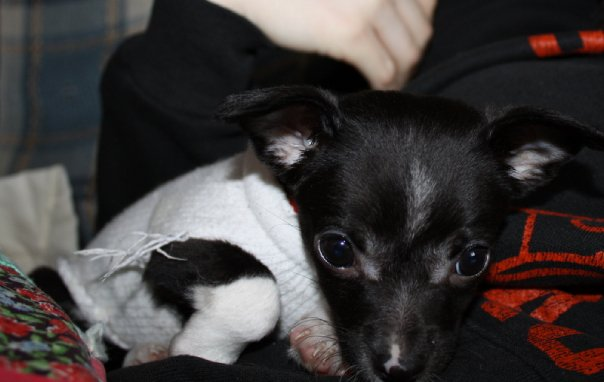

I will break down what I do for each step.
Thanks to David DeSandro and John Schulz. I used a few ideas from their excellent pixelization library Close Pixelate
This is a photo of my dog Dexter not scaled at all. It's just a regular img tag.
This is the same photo scaled down in a canvas element. The function tests for the larger side (height or width) and then takes 50 divided by the larger side with a floor of 35% for really small photos. This will scale down larger photos proportionately to their size. This photo has a width of 604 which comes out to about 8.28%
This canvas has the scaled down canvas as it's source and then scales it back up to the original specs. Instant pixelization.
You can manually set the scale ratio by using img_object.pixelize(.25). With an image this large it won't be very pixelized
Just be careful you don't set to a high a rate or your pictures can become unrecognizable.